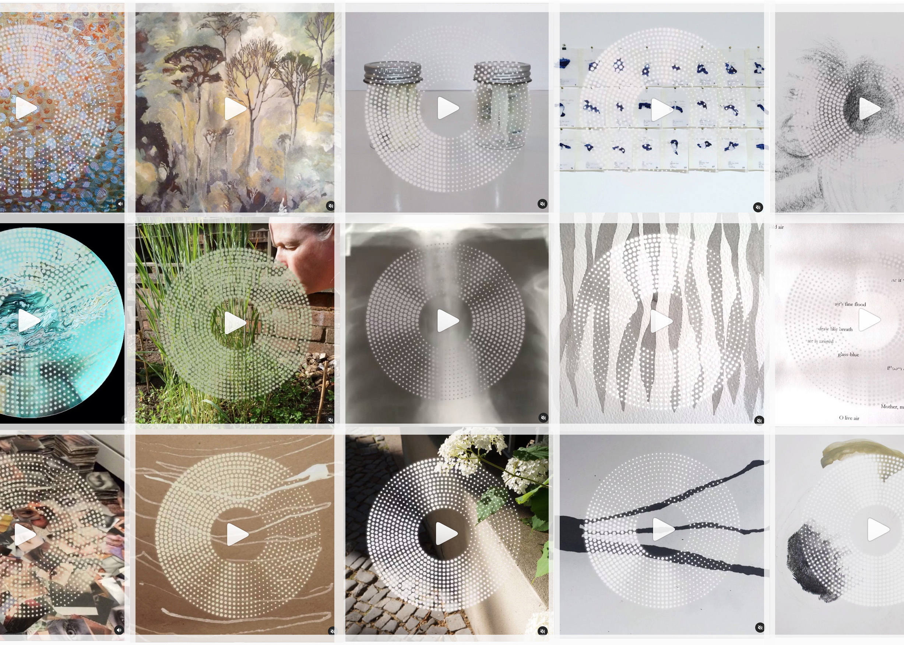

Breathworks
Digital participatory arts | Modern Art Oxford
Breathworks was Modern Art Oxford’s first online participatory project, the success of which has enabled the gallery to create an annual project that uses similar approaches to address topical themes and target particular audience groups. – Maria Moorwood, Head of Development, Modern Art Oxford.
In early 2020, I was faced with the exciting challenge of designing and developing Modern Art Oxford’s first digital participatory art project. Participatory art describes art forms that directly engage audiences so that they become co-creators. The objective of the commission was to reach new audiences, particularly online communities and non-arts participants; to instigate new partnerships with local organisations; to develop user-centred and user-generated processes; and to provide a foundation for an annual digital project.
The intention was to create an accessible framework that would allow a range of experiences to find creative expression. The gallery’s audiences were invited to capture an experience related to breathing, submitting an image and 20-60 seconds of audio via a simple web form. These media were then layered with a circular sound wave before being uploaded to social media and an online exhibition. This systematic approach was inspired by arts-based research: the practice was designed as a repeatable experiment.
Breathworks was co-designed with two focus groups that met regularly in June and July of 2020. Participants were a mix of gallery volunteers and people who responded to an online open call, hailing from a range of disciplines and professions but with an implied interest in the arts. Participants had the opportunity to try out and feedback on the ‘usability’ of the project’s participatory platforms; they were also invited to take part in the project once live, thus helping to build following amongst their own networks.
The focus groups informed the user journey and iterative design of the web-based platforms. I designed these interfaces by producing wireframes in Sketch. These wireframes needed to nest within the existing information architecture and aesthetics of MAO’s website. I communicated with the website developers to ensure a smooth handover of design assets. We also enabled an Instagram integration so that all #breathworks posts would populate an online gallery.
Breathworks launched to the general public on 1 August until 31 August, gathering 32 submissions for the online exhibitions and many more contributions displayed in the gallery as part of the Responsive Space exhibition, 2 October – 23 December 2020. On Instagram, the project reached 50,000 users and logged 12,000 views. Breathworks featured on BBC Arts, Art Daily, a-n The Artists Information Company, and The Oxford Times. The project led to collaborations with the The Oxford Research Centre in the Humanities (University of Oxford) and Oxford Kindness Wave.
We gathered verbal feedback as part of impact evaluation. One participant wrote, “It took me out of my lockdown day’s plans and into something I had not expected this morning”. An audience member observed, “Breathing is always important, but in the current climate it needs to be focussed on”. A focus group participant reported, “I've had such a positive response to my Breathworks from friends and colleagues […] I've gone on working with the ideas we explored […] so the experience was certainly of lasting benefit.” Another affirmed, “I very much enjoyed the experience of user testing for Breathworks and if you are looking for volunteer support for future exhibitions, please don't hesitate to be in touch”.
Exhibition photography by Ben Westoby and Helen Messenger.